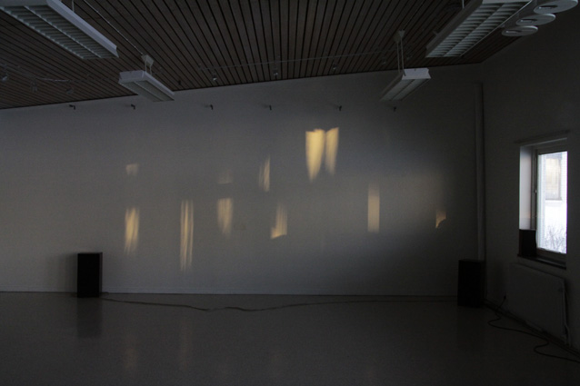
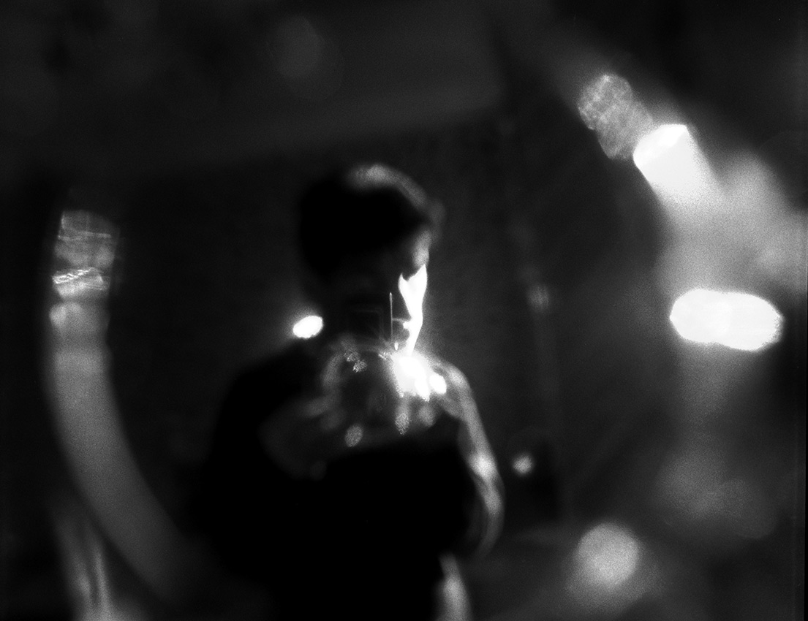

31 Dec 2015 indigo archetypes The visible world seems to be comprised of endless archetypal images. Although those images are… Achilles Nasios More
30 Dec 2015 hyperborean nymphes The visible darkness of the winter light of the North, inspired me to start searching… Achilles Nasios More
27 Dec 2015 survivors I have always been impressed by Japanese Zen calligraphy and drawing. I found the dynamics… Achilles Nasios More
23 Dec 2015 on line Nearly ten years ago I started observing the stratosphere through my lens. I gazed at… Achilles Nasios More
20 Dec 2015 experimental film narrations 4 - Järna, Sweden 2009. Storgatan (memory #14) -a portrait of town Järna, Sweden 2010.… Achilles Nasios More
 20 Dec 2015 video-art installations CROSS COVARIANCES #1 *(Video-art Installation-The theme) CROSS COVARIANCES #1 (Video-art Installation from "Spring Exhibition 2016"… Achilles Nasios More
20 Dec 2015 the 7th day The idea of the 7th day started in 1988 in Berlin. The concept was 'the… Achilles Nasios More
06 Dec 2015 anikon This project started during the early 90ties, with a semantics research on abstract photography. The… Achilles Nasios More
 15 Nov 2015 the meeting Τoulouse, France 2001. Searching for little Prince's vanished author. What excites me most, is the… Achilles Nasios More